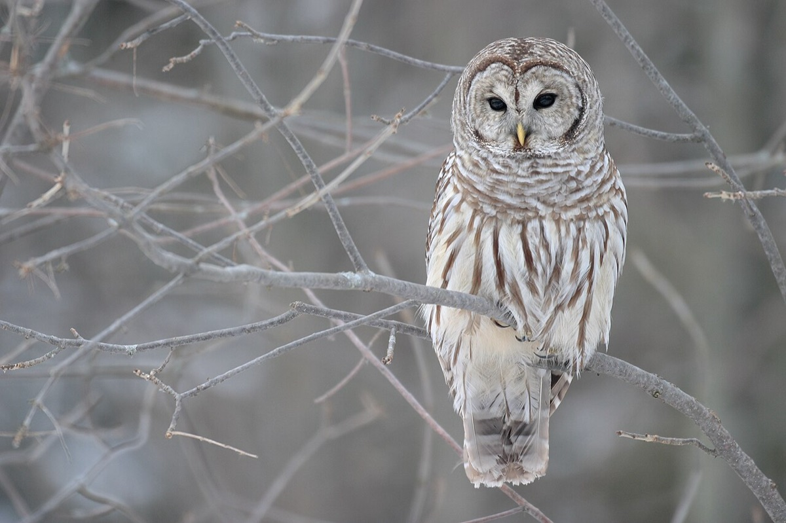

Barred Owl
Strix varia
- Kind
- bird · Strigidae
- Native to Vermont
- yes
- Legal status
- Vermont populations described as stable; no active management plan, monitoring continues (species page). No special legal status found. (checked 2026-10-30)
Listen
Call: a 6-second clip, cut from a 6-second recording (trimmed, with a short fade-out, and saved as a small MP3), so it plays without an internet connection. Recording by Rob Porter, CC BY-SA 4.0, on Wikimedia Commons, where the whole recording is (an internet connection is needed to open it).
Pictures

Names
Barred owl, Strix varia. Heard more often than seen.
Range and habitat
Extensive mature deciduous forest (river bottomland, northern hardwoods, oak-hickory), also mixed conifer-deciduous forest and, less often, spruce-fir. Roosts in shaded mature forest, often next to a trunk; in hot weather it uses the upper canopy of large white pines. It nests in natural tree hollows 20 to 40 feet up in large trees, abandoned hawk, squirrel or crow nests, and nest boxes; pairs reuse the same site every year. It is among the animals that use vernal pools (Wood Frog).
How to identify (by season; look-alikes and the key difference)
- Call: a loud "Who-cooks-for-you, who-cooks-for-you-all."
- Plumage: barred with black and white stripes. Size and eyes are not described in the sources read.
Through the year
Dates are typical for Vermont and shift with elevation and year; "approximate" means the source gave a season and the dates are a translation of it.
| When | What | Look for | What to do | Dates |
|---|---|---|---|---|
| Apr 1 to Jun 30 | nesting (avoid) | Raptor nesting season, typically April through June (Landowner's Guide, for forest hawks and owls): avoid timber harvest within a buffer of the nest tree, equal to or greater than the height of the tallest tree within 20 feet of the nest, and avoid large openings within 300 feet. | - | stated |
| Dec 1 to Feb 28 | sign (watch) | Often seen or heard on winter afternoons; in cold weather it roosts lower in the canopy where the vegetation is denser. The call is a loud 'Who-cooks-for-you, who-cooks-for-you-all'. | - | approximate |
Signs on the land (tracks, scat, browse, nests, holes, calls)
- Pellets (indigestible bones and fur) collect on the ground under a regularly used perch.
- Large tree cavities and old stick nests (nest incubation is 28 to 33 days; chicks hatch helpless).
Role in the forest (what it eats, what eats it, what it needs)
The sources read do not list its diet. The species page notes owls are drawn to grassy roadsides where rodents live and many die in vehicle collisions.
What helps it thrive (light, soil, shelter, food and the trees it uses)
- Large, undisturbed forest with big trees. The Guide's advice for forest hawks and owls is recorded in Barred Owl: protect large stick nests and cavity trees with a buffer during timber harvest, avoid cutting in the buffer during the nesting season (typically April through June), and designate one or more trees 12 inches across or larger per acre as wildlife trees.
- Prey and hunting ground: these birds eat small mammals, birds, amphibians and reptiles (Audubon and the Atlas, as recorded in the note), an inference, not a source's advice, is that a mosaic of field, forest edge and wetland that keeps those prey animals supports them. The Barred Owl species page notes owls are drawn to grassy roadsides where rodents live and many die in vehicle collisions.
Managing for it (habitat practices) and living with it (conflicts and damage)
- The species page names the threats landowners can influence: habitat loss from housing and recreation development, and forest management that ignores mature forest as wildlife habitat.
- Keep large trees with cavities (see Pileated Woodpecker for the snag and den-tree targets) and designate one or more trees 12 inches DBH or larger per acre as wildlife trees; they need not be good timber.
- Raptor nests (the Guide): protect large stick nests with buffers during timber harvest; avoid harvesting within the buffer during the nesting season (typically April through June); the buffer should equal or exceed the height of the tallest tree within 20 feet of the nest; drop trees away from the nest tree; avoid large openings or clearcuts within 300 feet of a raptor nest, which can expose it to predators such as raccoons.
- Owls use nest boxes.
Legal status
Not stated on the species page.
Sources
- Vermont Fish & Wildlife Department, barred owl: https://vtfishandwildlife.com/learn-more/vermont-critters/birds/barred-owl (read 2026-10-30)
- Vermont Fish & Wildlife Department, A Landowner's Guide (complete PDF): raptor nest trees and den trees (part one) (read 2026-10-30): https://vtfishandwildlife.com/sites/fishandwildlife/files/documents/Learn%20More/LandownersGuide/Landowner-Guide-Complete.pdf
What this page is based on
Kind of source: primary-agency (Vermont Fish & Wildlife species page and the department's Landowner's Guide, read as text)
What was read: The Vermont Fish & Wildlife barred owl page (summarizing fetch, 2026-10-30; no size, no eyes, no whitewash, no courtship, egg-laying or fledging months, no legal status, no last-updated date) and the raptor nest and den tree passages of the department's A Landowner's Guide (PDF read as text). The nesting caution comes from the Guide's general advice for forest hawks and owls (April through June) and is not specific to this owl on the species page. The winter window translates 'winter afternoons'.
Last checked: 2026-10-30
Vermont Woodland Owner's Reference, built 2026-11-09. Rules and dates here are summaries, not legal advice; dates shift with elevation and year. Photo and recording credits · Note: _reference/US-VT/Species/Barred Owl.md